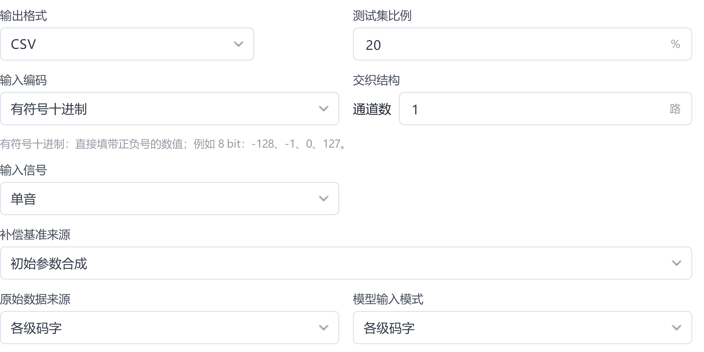
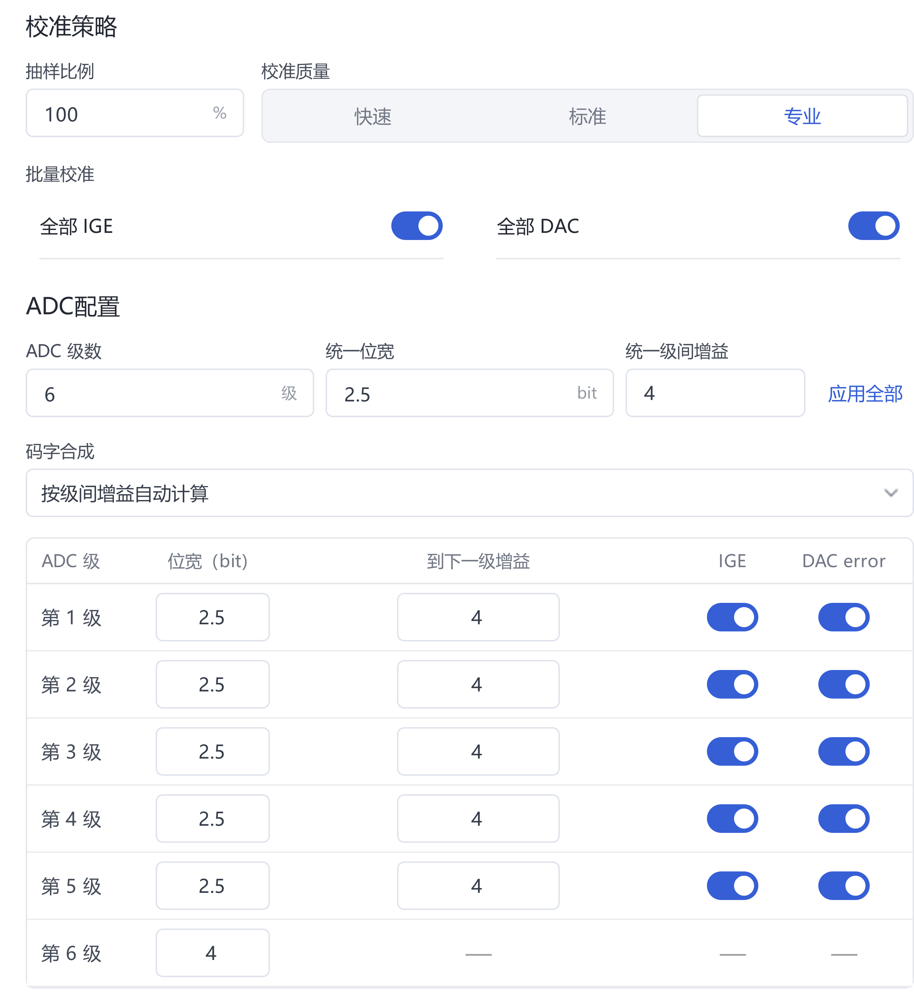
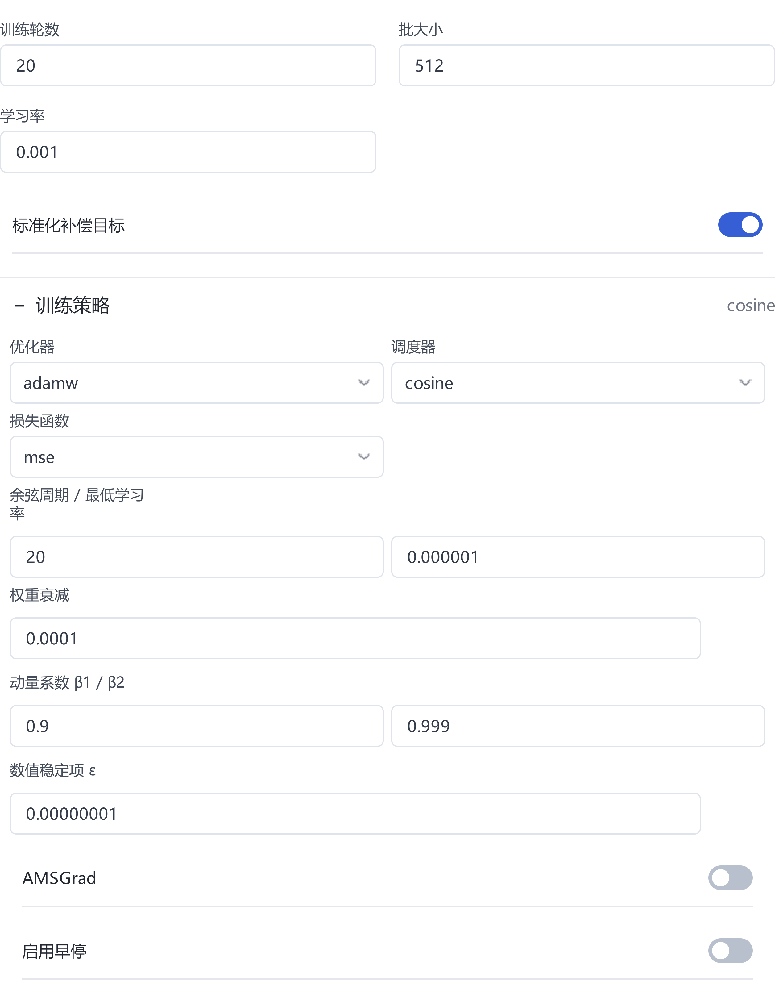
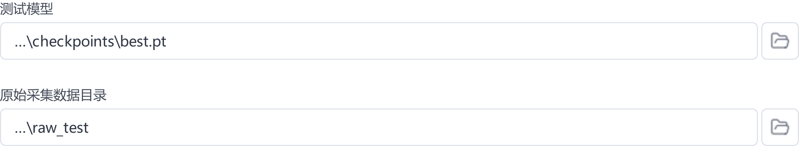
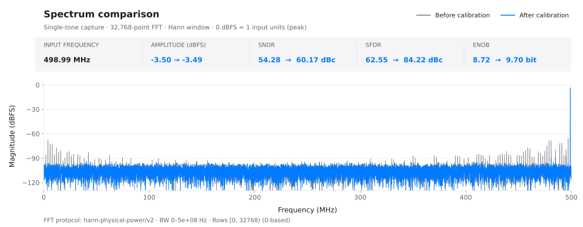

用户手册
本手册指导读者使用自己的 ADC 数据完成校准、比较方案，并判断结果是否可信。首次使用先按快速上手完成一次实验；更换数据或 ADC 后，按本手册重新核对输入、参考和评估条件。完整字段定义见配置参考。
适用界面为 Windows 版 3.5.0。配置图由软件界面组件载入全频段实验已保存设置后，直接按 4 倍分辨率渲染；未重新运行实验。实际结果图采用软件导出的 SVG 原图，理论参照另行标注。
1. 工作流程与基本概念
项目、任务、模型和报告
项目保存一次研究的配置、任务关系和结果索引；任务是一次预处理、训练、测试或优化运行。每次改变实验条件，应创建可区分的新任务，保留原结果供比较。模型包含权重及输入输出约定，后续操作还可能需要关联的预处理配方、浮点参照等文件。报告记录指定模型在指定数据和计算条件下的表现。
在软件中创建项目并选择可写目录，再进入 数据 页准备输入。软件目录、项目目录和原始采集目录分开存放；保留原始采集的只读副本。项目可能只引用外部文件，保存项目不等于已备份全部数据。
| 阶段与入口 | 所需输入 | 目的与主要产物 |
|---|---|---|
| 数据：预处理 | 原始码字、ADC 规格、信号类型 | 检查编码与结构，划分采集，生成模型输入、基准、拟合参考和配方 |
| 配置、训练：浮点模型训练 | 完整训练数据目录、网络与训练设置 | 学习补偿关系，保存检查点、实际配置和训练记录 |
| 测试：独立评估 | 模型及配套文件、独立原始采集 | 应用冻结的预处理参数，输出校准前后频谱和逐组指标 |
| 模型优化、硬件 | 已验证模型、方案选择数据、必要工具 | 在精度约束下压缩模型，评估定点及数字实现 |
三类数据角色
| 角色 | 含义 | 需要核对的内容 |
|---|---|---|
模型输入 inputs |
各级码字或合成输出码字，经约定格式组织后送入模型 | 列顺序、通道顺序、窗口、编码与训练时一致 |
补偿基准 baseline |
校准前的重建输出，模型补偿量与其合成得到校准结果 | 来自初始参数还是粗校准参数；其幅度尺度是否明确 |
目标参考 reference |
按信号类型拟合得到的训练参考 | 拟合是否适用、是否受失真或格式错误影响 |
拟合参考用于构造训练目标，并非独立测量的真实模拟输入。训练损失较低，说明模型更接近该参考；校准是否有效还要看独立采集。软件目录中的兼容名称 code、actual、ideal 分别对应上述角色，不应将 ideal 误读为无误差的实测真值。
2. 准备自己的 ADC 数据
组织文件并记录采集条件
目的是让软件正确解释码字，并使后续结果能够追溯。准备每组连续采集的 CSV/TXT、ADC 结构说明和采集记录；在 数据 页选择原始数据目录。
一份文件对应一组采集，一行对应一个时间采样点。CSV 用逗号分隔，TXT 用空白分隔。采用纯数值，不加表头、时间戳、序号列或单位；码字不得包含小数、空值、NaN 或 Inf。固定宽度二进制属于专门的编码入口，不能当作十进制数读取。
| 数据形式 | 选择与填写 | 判别要点 |
|---|---|---|
| 各级整数码字 | 数据来源选“各级码字”；设置级数、各级位宽、名义级间增益和编码 | 每列对应实际一级；先确认列顺序与各级允许码域 |
| 最终 ADC 整码 | 数据来源选“最终输出码字”；设置输出位宽和有符号／无符号编码 | 每行一个码字；不再填写内部级间增益 |
| 同一码字按位拆列 | 选择对应的补码二进制输入；最高位在前，每列仅 0/1 | 位列不是物理 ADC 级；符号位解释必须正确 |
| 多路交织采集 | 填写通道数；按 lane 0 至 lane L−1 循环逐行排列 | 以完整交织帧组织数据，不把通道数当成级数 |
例如，demo 的六列分别对应五个 2.5-bit 级与一个 4-bit 后端；前五列是 −4～4，末列是 −8～7。这里的“2.5 bit”表示级结构，文件内仍为整数。该范围仅适用于此 ADC 结构，不能照搬到其他器件。
各级码字选“偏移二进制”时，每列应为对应位宽的固定 N 位 0/1 字符串，中间码表示零。例如 8 位 10000000 表示 0；它与最终输出入口的无符号十进制整码不同。补码按位拆列时，每列位宽为 1，最高位在前。完整格式见输入参考。
采集记录至少包含文件编号、仿真或实测来源、器件与通道、采样率、输入频率与幅度、满量程定义、样本数、温度、供电和采集批次。仿真另存误差模型、参数及随机种子；实测记录信号源、时钟和前端设置。输入幅度统一注明峰值、峰峰值或 RMS，使用 dBFS 时注明基准。
总采样率取合并输出序列的采样率。例如两路各 700 MS/s 的交织输出填写 1.4 GHz。双音频率提示填写 f/fs；100 MHz、1 GHz 采样率对应 0.1，不能直接填 100。
检查是否能够导入
- 在 数据 页选择原始目录，按采集规格填写数据来源、编码、通道数和 ADC 结构。
- 点击 检查数据，核对文件数、列数、有效行数、码字范围和识别到的信号。
- 对照原始采集记录检查符号、通道顺序及饱和情况。检查通过只表示格式可处理，不能证明模拟前端、时钟或采集过程正常。
完成标志是检查通过，且识别结果与采集记录一致。此时尚未完成模型训练数据的生成。出现列数或越界错误时先修正格式与编码；出现拟合警告时先核对信号类型、码字合成和采集质量，再决定是否继续。不要删除异常首行来掩盖格式问题。

理解 demo 的适用范围
全频段 demo 为同一仿真器件的 50 组单音采集：10 个频点覆盖约 1～499 MHz，搭配 −1、−3、−6、−9、−12 dBFS 五档幅度；采样率 1 GS/s，每组 32768 点。误差包含级间增益、DAC 电平、比较器偏移、三阶非线性和记忆项，以及 5 LSB RMS 输入热噪声。
相对原始 generate_pipelined_single_tone.m，教程将频点数量设为 10、目标频率范围设为 1～499 MHz；幅度、噪声、器件误差和随机种子保持原设置。各组使用同一套固定器件失配，未覆盖时钟抖动、温漂或器件间差异。精确频率、参数和散列见样例记录与数据清单。
3. 预处理与数据划分
先确定训练、验证和最终测试的用途
在拟合粗校准参数、训练网络之前划分采集。划分单位是完整文件或采集批次，不将同一连续记录的相邻窗口随机拆到不同用途，以免共享高度相关的数据。
| 数据用途 | 允许参与的工作 | 必须保持的边界 |
|---|---|---|
| 训练集 | 粗校准参数估计、网络权重训练 | 不混入最终测试采集 |
| 验证集／方案选择数据 | 选择窗口、网络、轮数、剪枝阈值与位宽 | 其结果已影响方案选择，不能再作为最终独立结论 |
| 最终测试集 | 冻结方案后报告性能 | 不用于拟合参数、选择模型或反复调参 |
软件的 测试集比例自动生成训练与留出两部分，并不自动建立独立的三份数据。需要反复调参时，先在软件外保留最终测试目录；其余数据再按文件划分训练和验证。此时软件生成的 raw_test 可用作验证入口，但要在实验记录中明确用途。最终测试另选预先保留的原始目录。
快速上手的 50 组按 20% 留出，得到 40 组训练、10 组测试；粗校准的 39 组拟合和 1 组验收均属于训练侧。粗校准内部验收不等于神经网络的独立验证。频率或幅度可能跨集合重叠；若要验证跨频段、跨温度或跨器件能力，应按这些条件留出采集。
配置码字合成、IGE、DAC 和补偿基准
目的是把原始码字转换为一致的训练输入与参考。输入为检查通过的采集和名义 ADC 规格，操作位于 数据 页。
| 设置 | 作用与选择依据 |
|---|---|
| 级数、各级位宽 | 决定每列的结构和码域；与真实 ADC 一一对应 |
| 名义级间增益 | 决定初始码字合成权重；填写设计值，不用猜测的失配值替代 |
| 按级间增益自动计算 | 适合已知流水线结构；权重由结构关系确定 |
| 自定义每通道每列权重 | 适合已知列权重关系；检查后按界面扫描初始权重。初始权重会按软件规则取到 2 的整数次幂，需检查实际采用值 |
| 全部 IGE | 启用适用级的级间增益误差估计；确认结构与信号模型成立后使用 |
| 全部 DAC | 启用适用级的 DAC 电平误差估计；检查数据覆盖和拟合验收结果 |
| 初始参数合成 | 补偿基准保持名义重建输出，便于观察总校准改善 |
| 粗校准后合成 | 补偿基准采用粗校准流程最终接受或回退的参数，网络处理其剩余误差 |
IGE、DAC 和基准来源是不同设置。启用粗校准不等于把补偿基准改为粗校准输出；参考生成与基准选择须分别核对。粗校准结束后查看接受、拒绝或回退状态，不能仅凭任务完成判定参数估计有效。最终输出码字模式按该入口处理，不套用不可见的内部级结构。

执行预处理并确认产物
- 设置测试集比例、抽样比例和校准质量，核对补偿基准来源。对照实验复用同一数据划分；重新检查可能产生新的随机划分。
- 执行 检查数据 → 开始预处理。自定义权重模式按 检查数据 → 扫描初始权重 → 开始预处理 执行。
- 若设置已锁定，选择 重新开始，修改后重新检查。单音拟合需要确认时，先复查编码、名义增益和信号质量。
- 完成后查看分集编号、粗校准状态及输出目录。失败或中止时先确认已完成阶段，不使用不完整结果启动训练。
| 产物 | 使用方式 |
|---|---|
train_N |
选择该完整目录作为训练根目录；N 为训练采集数 |
test_M |
留出采集的预处理产物；是否用于验证或最终测试由实验设计决定 |
raw_test |
对应留出原始采集的测试入口，可能只保存原始文件引用 |
inputs、baseline、reference |
按采集编号配对的输入、补偿基准和参考；不要只选择其中一个子目录作为训练根目录 |
adc_config.json 与预处理配方 |
保存编码、结构、重建和测试所需信息，随数据及模型一同保留 |
测试比例为 0% 时，训练角色目录直接位于预处理结果根目录；最终输出模式可能只生成 inputs 与 reference。完成标志是任务成功、数据组数符合划分、角色文件配对完整且配方可读取。缺少 train_N 时先检查测试比例；raw_test 失效时检查原始文件引用。
4. 配置和运行训练
选择输入与小型网络
目的是在满足校准指标的前提下控制模型规模。准备完整训练目录和独立验证采集，进入 配置 → 浮点模型 → 模型训练。
在 数据读取 中核对输入模式、训练根目录、总采样率、输入信号和每组读取行数。0 表示读取全部；非零值是每份采集的读取上限。读取行数、输入窗口和批大小分别控制数据长度、时间上下文和一次参数更新的样本数，不可互相替代。
| 网络设置 | 作用 | 选择依据 |
|---|---|---|
| 窗口数量 | 每次预测使用的相邻采样点数 | 主要为静态误差时可先试 1；存在记忆效应时比较 3 等短窗口，再根据验证结果增加 |
| 隐藏层 | 每层节点数；多层用逗号分隔 | 先用单隐藏层和少量节点；增加容量前排除数据与参考错误 |
| 网格数 grid | 控制样条分段的细度 | 先用较粗网格；更细网格增加容量与计算量，是否改善需独立验证 |
| 样条阶数 k | 控制样条多项式阶数 | 从低阶开始比较；高阶不能替代正确的数据覆盖 |
| 基础函数 | KAN 基础分支的函数形式 | 固定一种作为起点，确有需求再做单变量比较 |
| 多通道输出使用独立 KAN | 每个分支仅接收对应 lane 的级码输入 | 根据通道耦合及部署要求选择，并核对量化兼容性 |
可将单隐藏层 2 个节点、grid 1、k 2 作为小模型对照起点，但这不是已经验证的通用配置。窗口由误差是否具有记忆性决定。只有验证集仍显示系统性残差且增加容量确有收益时，才逐步加宽、增加网格或调整窗口；达到目标后优先保留更小方案。
全频段记录采用窗口 3、单隐藏层 5、grid 5、k 3、identity，得到 18→5→1、1820 参数。它是已完成实验的配置，不是最小规模结论。输入维数以软件结构预览为准；六列、单通道、三点窗口时为 6×3=18，交织或输出码字模式需重新核对。
设置训练策略与运行设备
在 训练设置 中设置轮数、批大小、学习率与目标标准化，展开 训练策略 和 运行设置 核对其余参数。
| 设置 | 目的与判断依据 |
|---|---|
| 学习率、优化器 | 控制更新过程；损失持续振荡或发散时先减小学习率，再检查目标和输入尺度 |
| 训练轮数 | 设置本次迭代预算；更多轮数不保证独立测试更好 |
| 批大小 | 控制更新批次与显存占用；显存不足先逐步减半，并记录改变 |
| 调度器 | 调整学习率进程；余弦周期应结合计划训练轮数设置，避免只延长轮数而忽略调度器 |
| 权重衰减 | 约束权重规模；通过固定数据划分的对照确定，不能代替独立验证 |
| 标准化补偿目标 | 改善目标量级差异；模型仍按约定输出补偿量。比较损失时必须核对是否标准化 |
| 早停 patience、min delta | 根据训练损失的改善幅度决定是否提前结束；阈值单位随目标尺度变化 |
| 设备、精度、随机种子 | 记录实际使用的计算环境与初始化；设备选 auto 时仍应检查解析结果 |

有兼容 NVIDIA GPU 时可选 cuda，启动后在训练页确认设备。全频段实验的 auto 实际解析为 CUDA、float64；自己的环境以任务记录为准。保留相同种子有助于比较，但不同设备、版本和随机分集不保证逐位一致。
启动、观察、停止和继续
- 核对配置后进入 训练，选择 开始新训练。检查任务名称、数据目录、结构摘要和实际设备。
- 观察损失是否有限、轮数是否推进、学习率是否按计划变化。训练损失与独立验证指标分别记录。
- 需要中止时选择 安全停止，等待当前轮完成并保存状态。继续兼容的中断任务可用 继续剩余训练。
- 需要追加轮数时选择 继续训练…，使用原任务的
last.pt并填写追加轮数；best.pt不用于该恢复入口。更改结构、数据或实验目的时建立新任务。
完成标志是任务显示完成或正常早停，输出目录中有检查点和完整运行记录。checkpoints/best.pt 按训练损失选择；checkpoints/last.pt 保存用于继续训练的状态。同步保留 config_resolved.yaml、run_info.json、run_manifest.json、metrics.csv 和 run.log。
阅读损失时先看标题、纵轴和单位。标准化 MSE 与未标准化 MSE 不能直接比较；未标准化数值仍取决于输出尺度，不能未经换算就写成 V²。早停和最佳训练损失都不能证明没有过拟合。
评估记录 → 训练后评估当前数据使用本次载入的数据，不会自动执行独立测试。逐轮记录 SNDR/SFDR 若被用于选择轮数，其采集也属于验证数据。完成训练后仍须进入 测试 页执行独立评估。
5. 独立测试与结果解读
固定模型和测试条件
目的是确认冻结的校准方案对未参与方案选择的采集是否有效。准备完整模型任务、独立原始采集和采集记录，进入 测试 页。
- 在 测试模型 中选择本次训练的
best.pt或明确指定的待比较模型，检查模型摘要、输入模式、通道数和关联配方。 - 原始采集数据目录选择
raw_test，或预先保留且格式兼容的外部原始目录。测试自动应用模型关联的预处理参数；不要针对最终测试集重新拟合这些参数。 - 核对模型读取的采样率与采集一致。选择单音／双音，必要时填写双音频率提示，设置每组读取行数与结果保存位置。
- 点击 开始测试。完成后检查成功、失败和跳过的采集数，确认没有漏组。安全停止在当前组完成后生效；兼容中断任务可用 继续剩余测试。

测试读取行数独立于训练设置；交织数据按完整帧对齐，实际 FFT 点数还取决于文件长度。比较时记录采样率、实际读取范围、FFT 点数、窗函数、分析带宽、信号模式和幅度标尺。软件按完整序列评估，窗口无法覆盖的边界点可能沿用基准；以报告中的协议和范围为准。
完成标志是全部预期采集均有可解释的结果。通过任务的 打开目录 保存 test_summary.json、fft_summary.csv，以及 groups/ 内的 fft_metrics.json、predictions.csv、频谱 SVG 等文件。模型或配方不匹配时恢复原任务的配套文件，不通过修改扩展名或手工替换配置绕过检查。
联合阅读指标与频谱
在 单组 FFT 中逐组查看校准前后曲线，在 全部数据组指标 中检查频率和幅度覆盖。指标均值用于概括，最差组和退化组用于判断适用边界。
| 指标或现象 | 可以说明什么 | 还需检查什么 |
|---|---|---|
| SNDR 提升 | 当前分析条件下总体噪声与失真相对信号减小 | 是否同一采集、同一带宽和幅度条件；有无局部退化 |
| SFDR 提升 | 最大杂散相对信号减小 | 最大杂散位置、谐波及交织相关分量是否改变 |
| ENOB | 按报告定义由信噪失真性能换算的有效位数 | 输入幅度与单音条件；双音不套用标准单音 ENOB |
| 杂散下降、噪底近似不变 | 主要改善可重复失真，随机噪声仍存在 | 积分指标与频谱是否一致 |
| 损失下降、独立指标不升 | 对训练参考的拟合改善尚未转化为目标性能 | 参考偏差、过拟合、数据分布或评价条件变化 |

查看软件 SVG 原图。该图使用 32768 点周期 Hann 窗、1 GHz 采样率、0～500 MHz 分析范围，协议为 hann-physical-power/v2。这些条件对应本次实验，其他报告按各自记录解释。

噪底、理论参照和结论范围
随机输入热噪声不会因确定性转换误差得到补偿而自动消失。增加 FFT 点数会改变每个频点的噪声电平，改变窗函数、带宽或归一化也会改变图形；不能只看曲线整体下移就宣称降噪。出现异常大幅噪底下降时，先对齐幅度标尺、读取范围和频谱协议，再检查是否有滤波、频点剔除或数据泄漏。
理论图和软件图还必须具有可比的幅度基准。本 demo 的理论参照以 1 V 峰值为 0 dBFS，软件图采用归一化重建值，二者约相差 2.50 dB。参照只含理想正弦与原输入热噪声，不含量化及残余转换误差。换算、原始导出和理论图见频谱说明，不能把理论参照当作实测或模型输出。
当前 50 组记录中，10 组留出采集的 SNDR 改善为 4.50～5.96 dB、SFDR 改善为 20.12～28.89 dB。它支持该仿真器件、这些采集与所列条件下的改善；未证明模型规模最小，也未以新噪声重复试验证明完全无过拟合。更换幅度、频率、温度、时钟或器件后，应重新采集并验证，超出训练覆盖时尤其如此。
6. 改善校准效果
按原因排查，再调整参数
目的是定位性能瓶颈，避免用更大网络掩盖错误。准备基准模型、完整预处理记录和固定验证数据，按下表顺序检查；每次改变一个因素并创建独立任务。
| 顺序 | 检查与操作位置 | 通过条件或下一步 |
|---|---|---|
| 1. 数据与 ADC 结构 | 数据页：编码、列顺序、位宽、增益、交织顺序；原始采集：饱和、缺样、时钟和幅度 | 格式检查与采集规格一致，名义输出具有合理频谱 |
| 2. 基准与参考 | 预处理任务：信号模式、基准来源、粗校准接受／回退、拟合警告 | 参考适用于当前信号，基准定义明确，配方可追溯 |
| 3. 训练状态 | 训练页和运行记录：有效样本、设备、有限损失、学习率、目标尺度 | 排除发散、错误目录和未完成任务，再考虑延长训练 |
| 4. 模型容量 | 固定验证数据比较短窗口、少节点和粗网格 | 增加容量确有稳定收益才保留，否则回到更小方案 |
| 5. 独立验证 | 测试页：各幅度、频率与新采集的结果 | 保留最差组与退化组，明确失效条件；方案冻结后评估最终测试集 |
如果训练误差继续减小，而验证指标停滞或下降，优先缩减容量、减少轮数、调整正则化或增加独立采集。若训练和验证都不佳，先排除输入和参考问题，再判断欠拟合。不要仅凭一条损失曲线给出过拟合或欠拟合结论。
进行公平的参数对照
对照开始前固定原始文件及散列、划分编号、预处理配方、读取范围、采样率、信号模式、FFT 条件、种子和训练预算。比较窗口时记录随之变化的有效样本数和模型参数数，避免将多因素改变解释成单一参数的效果。
每个方案保存结构、参数数、训练时长、逐组 SNDR/SFDR、最差组、退化组和验收状态。频率相同但幅度不同的点分别解释；多幅度折线不能当作同幅度频率响应。对接近的结果使用不同初始化或新的同条件采集复核。
完成标志是选出满足预先约定指标且规模更小的方案，并保存比较依据。模型搜索、剪枝验收、位宽选择和人工反复查看过的数据均计入方案选择范围；最终测试完成后若继续调参，应重新保留未使用的采集用于最终评估。
7. 模型优化与硬件流程
浮点模型通过验证后再进入本章。各步骤可按目标选择；结构压缩、定点近似、RTL 功能验证和工艺实现分别回答不同问题，不因上一阶段通过就默认下一阶段达标。
模型搜索：在预算内寻找较小结构
输入为训练数据、方案选择数据和明确的 SNDR/SFDR 下限。在 配置 → 浮点模型 → 模型搜索 设置验收目录、指标下限和时间预算，必要时调整高级搜索设置，再启动任务。
搜索使用自身的训练阶段和预算，不能把普通训练页的轮数与早停直接视作搜索预算。验收模式“频点平均达标”先在频点内求平均，再对各频点求平均，SNDR/SFDR 均须达到阈值；“每组都达标”要求每份采集的两项指标均达标。按实验目标选择，汇总达标后仍检查逐组最差情况。
完成后保留候选结构、搜索状态、验收结果和导出的模型，并对冻结方案执行独立测试。时间预算内找到的较小模型不是全局最小证明；没有满足阈值的候选时记录未达标，不仅挑选最高分展示。异常停止后保留任务，按界面检查能否继续。
模型剪枝：减少连接并控制性能损失
输入为已验证的浮点模型和方案选择数据，从 测试 → 模型剪枝 打开。设置数据目录、读取范围及 SNDR/SFDR 增益保留目标，运行后检查逐组验收与连接数变化；需要恢复精度时使用剪枝训练入口，随后复测。
“增益保留”指原模型相对未校准基准的指标改善比例。例如 60→80 dB 的改善为 20 dB，保留 90% 对应至少 78 dB；它不表示保留 90% 连接。完成标志是剪枝结果被接受、规模统计明确、独立验证满足目标。保存来源模型、剪枝模型／训练种子、验收报告和后续训练记录，避免只保留一个不明状态的候选文件。
位宽扫描与量化训练：评估定点代价
输入为兼容浮点模型、完整训练数据、方案选择数据和配套预处理文件。在量化配置中先确定可行位宽：可使用 位宽扫描 选择候选并应用，也可明确指定方案；随后运行量化感知训练（QAT）及最终验收。
当前 QAT／量化流程限于单隐藏层共享网络；多隐藏层或独立输出结构的浮点训练、剪枝和测试可用性不代表可直接进入量化。先通过模型兼容性检查，再开始耗时任务。
位宽扫描得到的是候选，训练损失改善也不等于整数实现通过。检查应用方案、最终量化状态以及与浮点基准的性能差，再在独立原始采集上复测。保存位宽方案、量化模型、浮点参照、配方、训练与最终验收报告；缺少浮点参照或配方时从完整来源任务恢复。
RTL 与 ASIC：验证实现及评估约束
在 硬件 → 仿真与综合 选择通过兼容性检查的模型，确认接口和输出语义：补偿值输出提供校正量，校准值输出提供完整校准结果。准备所选流程需要的工具、许可、测试数据和约束，再选择仅导出、仿真对拍或包含综合的流程。
| 阶段 | 完成标志与应保存的文件 | 结果边界 |
|---|---|---|
| RTL 导出 | 源码及配套参数、接口说明生成成功 | 尚未证明仿真、精度或综合通过 |
| 仿真与逐码比较 | 数字输出比较通过，相关精度检查完成 | 核对实际测试向量和覆盖范围 |
| 综合 | 保存网表、资源／面积、时序及约束报告 | 目标时钟是约束，是否满足看实际结果 |
| ASIC 逻辑与物理实现 | 扩展自检通过，完成所选综合、布局布线和验证阶段 | 未运行或未通过的阶段分别记录 |
| 功耗评估 | 保存工艺、活动输入、覆盖率和功耗报告 | 属于指定条件下的估计，不是整机或整个 ADC 的实测功耗 |
ASIC 流程先在 管理 ASIC 扩展 中安装、导入或连接兼容环境并完成自检，再依次处理逻辑综合、物理实现与适用的功耗评估。外部工具及资源要求见硬件参考。比较方案时保持工艺、时钟、接口、输入活动和验证范围一致。
失败、取消或超时后保留任务，检查具体阶段并恢复兼容检查点。模型、工具、工艺或约束改变后重新运行受影响阶段；报告里没有执行的检查应记为未评估。
8. 保存、复现与迁移
保存完整实验
目的是在原机器或另一台机器上重新解释和执行实验。通过项目及任务的 打开目录 定位结果，任务完成后备份以下材料。
| 材料 | 必须保留的内容 |
|---|---|
| 原始采集与用途清单 | 训练、验证、最终测试文件，采集条件、编号和散列；保留外部引用目标 |
| 完整项目目录 | 项目记录、任务请求、配置、归档输入、预处理产物与配方 |
| 模型及关联文件 | best／last 检查点、剪枝或量化结果、浮点参照和匹配配置 |
| 结果与日志 | 逐组预测、频谱原图、汇总指标、验收状态及运行日志 |
| 环境记录 | 实际软件版本、发行包、GPU／驱动、实际设备和精度、外部工具与工艺版本 |
仅复制 best.pt 可能满足部分读取场景，但不足以保证继续训练、量化、硬件验证或旧模型测试均可恢复。复制完整任务及其来源关系更稳妥；跨目录移动前不要清理被引用的文件。
复现实验、打开旧项目和迁移电脑
- 在目标位置准备对应软件版本、项目副本和全部原始采集；在软件中打开该项目。
- 检查外部数据引用、模型摘要和配套文件；路径失效时恢复目录或在对应入口重新选择正确数据。
- 复用原始数据划分与已保存配方，先查看历史报告，再用同一模型和计算条件执行一组测试确认输入可读。
- 完整复测并对照逐组指标；重新训练时使用已保存配置和种子，将新结果写入独立任务，记录环境差异。
- 确认副本可用后再安排旧目录清理。升级时将新版解压到新目录，先验证项目副本；回退使用旧版完整软件和升级前备份。
完成标志是数据引用可解析、模型可读取、测试条件一致，结果差异能够解释。重新训练后的数值不必逐位相同，但数据、配置、版本和比较协议必须可追溯。不要通过重新随机分集来“复现”原实验。
9. 常见问题与求助
先保留当前任务和错误文本，再按故障阶段定位。更完整的安装与硬件排错见常见问题与排错。
| 现象 | 优先检查与处理 |
|---|---|
| 数据检查失败 | 文件分隔符、表头、列数、非有限值、编码及位宽；对照一份最小有效采集定位 |
| CUDA 不可用或实际为 CPU | 系统能否识别 GPU、驱动与发行包运行库是否兼容、运行设备设置；记录实际设备，见 GPU 排错 |
| 显存不足 | 批大小逐步减半，再评估模型与窗口；重新启动独立任务并记录修改 |
| 训练不收敛或损失非有限 | 数据角色是否配对、参考是否适用、目标尺度与学习率；先排除输入错误再扩容或延长训练 |
| 损失下降但测试指标下降 | 训练／验证隔离、采样率、读取范围、频谱条件及分布变化；按第 6 章比较容量与轮数 |
| 测试缺配方、模型不匹配 | 恢复原任务模型及关联文件；核对输入模式、结构、通道数和编码 |
| 继续训练失败 | 使用匹配任务的 last.pt，核对配置；结构或数据变更应建立新实验 |
| 移动后找不到原始数据 | 检查外部引用；raw_test 不一定含数据副本，恢复原始文件后再试 |
| 搜索、剪枝或量化未达标 | 分别检查候选、训练和最终验收状态，保留失败原因；不要将阶段成功等同于最终通过 |
任务记录通常位于项目的 tasks/<任务编号>/，包含 task.json、request.json、events.jsonl；训练任务另有配置文件。训练输出中的 run.log、run_manifest.json 与 metrics.csv 可用于核对设备、进度和数值。测试问题同时保留 test_summary.json 及对应组的报告。以 打开目录 显示的位置为准。
反馈应包含软件与 Windows 版本、GPU 和驱动、所在页面、最短复现步骤、预期与实际结果、完整错误文本、相关配置及任务日志。能用公开 demo 复现时注明采集编号、划分和改过的参数。截图保留字段名和错误信息；分享前遮挡个人路径、凭据和私有数据。提交方式见 CONTRIBUTING，敏感问题使用安全报告入口。